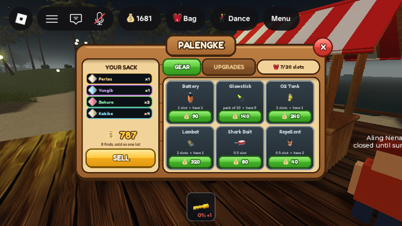
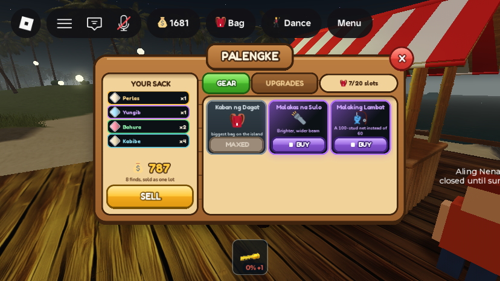
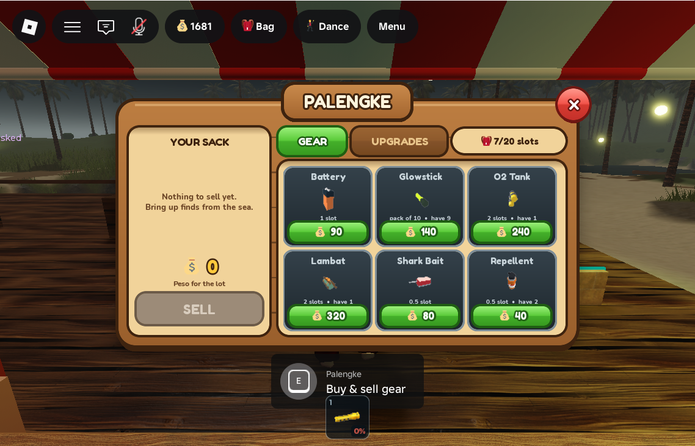
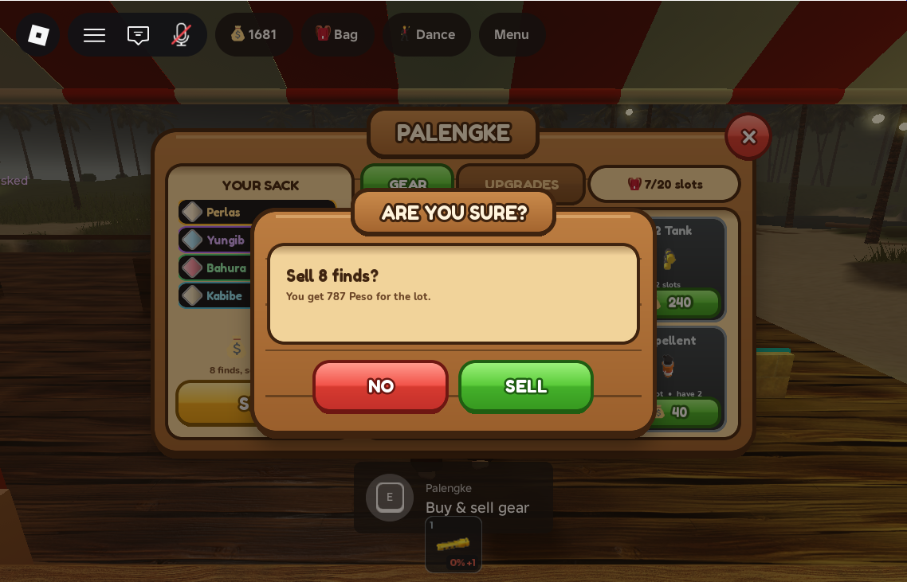

Palengke rebuilt in the wood + neon style
What was asked
"you have to allso update palengke UI". The morning's redesign rebuilt the Island Shop, Bag, status column and confirm dialog. The Palengke (the market counter where finds are sold and gear is bought) only got the new SELL confirm. Its panel was still the old dark-navy card grid with Gotham text.
What changed


The panel is built entirely from ReplicatedStorage.UIKit. It is a 600×320 wood panel (the Bag's height) with a "PALENGKE" sign and the round red X, fitted with K.fitBand between the top bar and the hotbar. On the phone it renders at about 0.75 scale.
- Left: YOUR SACK (cream inset). One dark row per kind of find, ringed in its rarity-tier colour (
K.tierForValue, the same tiers as the Bag). Each row has the find's gem and a count, most valuable first, and the list scrolls if all seven kinds are carried. Below the list: the server'slootValuein large gold with the money-bag emoji, a caption ("8 finds, sold as one lot"), and a gold SELL button. It still asks throughK.confirmfirst. With an empty sack the button goes flat grey. Pressing it then shows a red note ("Nothing to sell yet -- bring up finds from the sea.") instead of doing nothing. The rows show counts only, not per-kind Peso, because the server's total can include event bonuses. - Right: GEAR / UPGRADES tabs (green active, wood inactive) and a cream chip showing bag space ("🎒 7/20 slots"). The chip shows slots only because the bag name "Kaban ng Dagat" did not fit on a phone.
- GEAR: the six
ItemConfig.SortedShopItems()as steel gear tiles. Each has the item's 3D model (ItemIcon), a detail line ("pack of 10 • have 9", "0.5 slot • have 2") and a green button with 💰 and the price. There is still no tolda, and the server refuses it anyway. - UPGRADES: the next bag tier as a steel tile ("Bayong — 8 slots (now 4)", green price button). At the top tier it shows "MAXED", and with the Diver Bag pass it shows "OWNED" (grey). Then each
ItemConfig.PassItemsentry as a violet rare neon tile with a violet BUY and the Robux diamond. An owned pass turns into a grey "OWNED" with the blurb "fitted and working". - Toast (the server's
ItemFeedback/FlashlightFeedbacklines, e.g. "Repellent in your bag. -40 Peso.") is now a cream note with a dark outline, or a red outline and red text for a refusal. It sits over the foot of the open Palengke, or low-centre when it is closed. - First-dive tip ("Going deep? Carry an O2 tank...") restyled the same way, cream with a teal outline. Its behaviour is unchanged.
Behaviour is unchanged: the same remotes (RequestItemBuy, RequestBagUpgrade, RequestSellLoot, RequestGamePassPurchase) and the same PanelUtil entry "palengke". It opens from PalengkeCounter.PalengkePrompt anchored to the counter (22 studs), closes when AtPalengke goes false, and closes the Bag on open. The cursor is still freed in first person. The bodega Open-prompt owner filter was carried over as is.


All changes
| DataModel path | What | |
|---|---|---|
| rewritten | StarterPlayer.StarterPlayerScripts.GearHud | The Palengke is rebuilt on UIKit (568 → about 525 lines). The old row/card builders, clampPanels and the dark palette are removed; the toast and dive tip are restyled. The ScreenGui is still named GearHud (PhotoModeController hides it by that name), and the panel frame is now GearHud.Palengke (was GearHud.Shop; nothing else referenced it). |
| backup | ServerStorage._Retired.StarterPlayer_StarterPlayerScripts__GearHud_prePalengke | The previous GearHud, disabled. |
No new remotes, attributes, server scripts or world edits. Tuning constants in GearHud: PANEL_W/H 600×320, SACK_W 184, TILE_H 102, PASS_GLYPH (🔦 BrightBeam, 🎣 MalakingLambat).
Testing
- Phone (Device Simulator, iPhone 6 Plus landscape): opened with E at the counter. A first pass at 600×300 rendered at 0.8 scale with unreadable 8px detail text and a truncated bag chip. It was enlarged (320 tall, bigger tile text and icons, slots-only chip) and rechecked (screenshots above). The tab switch on the phone was forced locally for the Upgrades shot, because simulated clicks do not register in touch emulation.
- Desktop (Device Simulator off), with real clicks:
- Opened with E and showed live data (7/20 slots, repellent "have 1").
- BUY Repellent went to "have 2", with the toast "Repellent in your bag. -40 Peso."
- SELL with an empty sack showed the red "Nothing to sell yet" note.
- SELL with a sample 8-find snapshot opened "Sell 8 finds? You get 787 Peso for the lot." NO closed it and nothing was sold.
- The UPGRADES tab switched pages: the bag showed MAXED (the account is at Kaban ng Dagat), and both passes showed BUY.
- After each sample snapshot,
ServerStorage.InventoryRefreshwas fired so the client went back to the real inventory. Every playtest ended with a Server-side kick (then Stop, because Studio stayed in Play mode after the kick).
Unverified / known gaps
- No real sale was made: the test account had no finds. The SELL YES path sends the same
RequestSellLootas before but was not exercised. - Buying a bag upgrade and buying a pass were not clicked: the account is at the top bag tier, and passes would open a Robux prompt. Their buttons use the same remotes as before.
- The money-bag emoji beside the sack total renders pale on the cream background (legible, low contrast).
- The Palengke still calls the currency "Peso", while the top bar shows the same balance with a money bag and the server calls it Shells. This naming was not changed here.
Player_8745800367) bought 1 Shark Repellent for 40 during the desktop test, and it was saved (balance 1721 → 1681). Sample inventories were display-only and were replaced by a real refresh. The Device Simulator was turned off for the desktop test and is back on (iPhone 6 Plus landscape). No quick-test values were left in any script. The place has not been published.